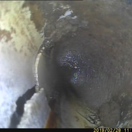

What is a Sewer Scope?
A sewer scope is a video inspection of the lateral sewer line from the house at or near the foundation to the city main or septic tank. A specialized camera is inserted into the sewer line to look for potential problems that could lead to sewage backup or expensive repairs.
Why It's Essential
Repairing or replacing a main sewer line is one of the most expensive hidden costs a homeowner can face. Often, standard home inspections do not cover the underground plumbing, leaving buyers vulnerable to thousands of dollars in repairs shortly after moving in.
- Identify Blockages: Find tree root intrusions, grease buildup, or debris.
- Detect Damage: Spot cracks, offsets, or collapsed pipes.
- Evaluate Pipe Condition: Determine if the pipe material (clay, orangeburg, cast iron) is reaching the end of its lifespan.
Common Issues Found
During a sewer scope, we look for several common issues that can affect the performance of your waste system:
- Root Intrusion: Roots from trees and shrubs can enter through small cracks and eventually block or break the pipe.
- Bellies (Sags): Low spots in the line where water and waste pool, often caused by soil settling.
- Offsets: Where two sections of pipe have shifted and no longer align properly.
- Corrosion: Especially common in older cast iron pipes.
Avoid Expensive Surprises
Know the condition of your sewer line before you buy. Schedule your sewer scope today.
Call 970-672-7631 to Schedule